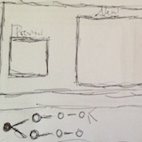
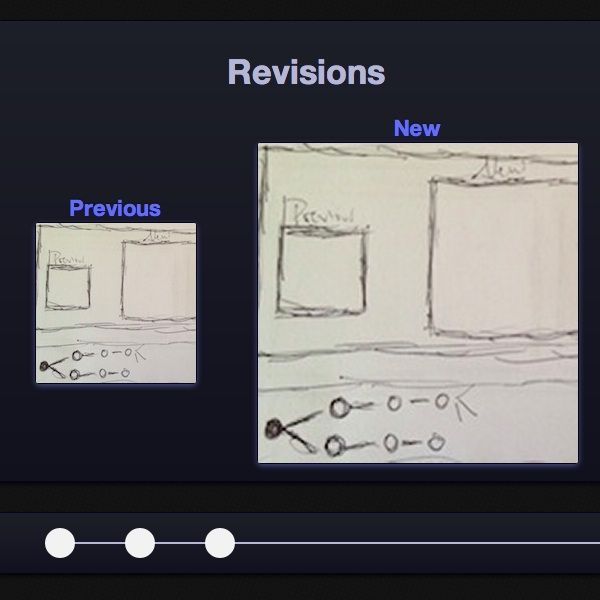
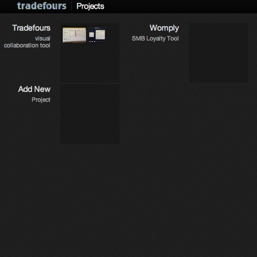

Projects
Tradefours
Sketch
October 20th, 2012

Blue version
October 30th, 2012

Black version
November 31st, 2012

Current version
Add New
Revision
Revision Summary
Inspiration
Heroku
Borrowed the dark design, used blue instead of purple as accent. Hoping to keep focus on the product changes
Layer Vault
Completely borrowed the timeline slider to show the changes over time
Edit